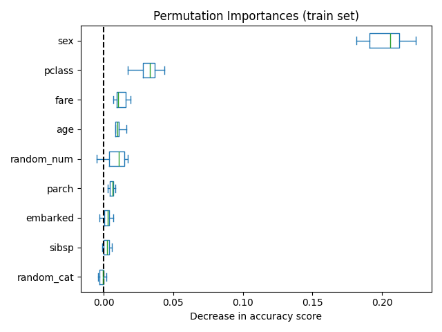
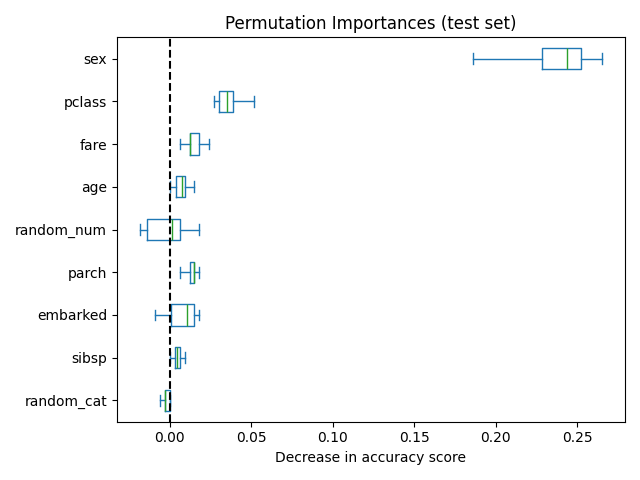

Note
Go to the end to download the full example code. or to run this example in your browser via Binder
Permutation Importance vs Random Forest Feature Importance (MDI)#
In this example, we will compare the impurity-based feature importance of
RandomForestClassifier with the
permutation importance on the titanic dataset using
permutation_importance. We will show that the
impurity-based feature importance can inflate the importance of numerical
features.
Furthermore, the impurity-based feature importance of random forests suffers from being computed on statistics derived from the training dataset: the importances can be high even for features that are not predictive of the target variable, as long as the model has the capacity to use them to overfit.
This example shows how to use Permutation Importances as an alternative that can mitigate those limitations.
References
# Authors: The scikit-learn developers
# SPDX-License-Identifier: BSD-3-Clause
Data Loading and Feature Engineering#
Let’s use pandas to load a copy of the titanic dataset. The following shows how to apply separate preprocessing on numerical and categorical features.
We further include two random variables that are not correlated in any way
with the target variable (survived):
random_numis a high cardinality numerical variable (as many unique values as records).random_catis a low cardinality categorical variable (3 possible values).
import numpy as np
from sklearn.datasets import fetch_openml
from sklearn.model_selection import train_test_split
X, y = fetch_openml("titanic", version=1, as_frame=True, return_X_y=True)
rng = np.random.RandomState(seed=42)
X["random_cat"] = rng.randint(3, size=X.shape[0])
X["random_num"] = rng.randn(X.shape[0])
categorical_columns = ["pclass", "sex", "embarked", "random_cat"]
numerical_columns = ["age", "sibsp", "parch", "fare", "random_num"]
X = X[categorical_columns + numerical_columns]
X_train, X_test, y_train, y_test = train_test_split(X, y, stratify=y, random_state=42)
We define a predictive model based on a random forest. Therefore, we will make the following preprocessing steps:
use
OrdinalEncoderto encode the categorical features;use
SimpleImputerto fill missing values for numerical features using a mean strategy.
from sklearn.compose import ColumnTransformer
from sklearn.ensemble import RandomForestClassifier
from sklearn.impute import SimpleImputer
from sklearn.pipeline import Pipeline
from sklearn.preprocessing import OrdinalEncoder
categorical_encoder = OrdinalEncoder(
handle_unknown="use_encoded_value", unknown_value=-1, encoded_missing_value=-1
)
numerical_pipe = SimpleImputer(strategy="mean")
preprocessing = ColumnTransformer(
[
("cat", categorical_encoder, categorical_columns),
("num", numerical_pipe, numerical_columns),
],
verbose_feature_names_out=False,
)
rf = Pipeline(
[
("preprocess", preprocessing),
("classifier", RandomForestClassifier(random_state=42)),
]
)
rf.fit(X_train, y_train)
Accuracy of the Model#
Before inspecting the feature importances, it is important to check that the model predictive performance is high enough. Indeed, there would be little interest in inspecting the important features of a non-predictive model.
print(f"RF train accuracy: {rf.score(X_train, y_train):.3f}")
print(f"RF test accuracy: {rf.score(X_test, y_test):.3f}")
RF train accuracy: 1.000
RF test accuracy: 0.814
Here, one can observe that the train accuracy is very high (the forest model has enough capacity to completely memorize the training set) but it can still generalize well enough to the test set thanks to the built-in bagging of random forests.
It might be possible to trade some accuracy on the training set for a
slightly better accuracy on the test set by limiting the capacity of the
trees (for instance by setting min_samples_leaf=5 or
min_samples_leaf=10) so as to limit overfitting while not introducing too
much underfitting.
However, let us keep our high capacity random forest model for now so that we can illustrate some pitfalls about feature importance on variables with many unique values.
Tree’s Feature Importance from Mean Decrease in Impurity (MDI)#
The impurity-based feature importance ranks the numerical features to be the
most important features. As a result, the non-predictive random_num
variable is ranked as one of the most important features!
This problem stems from two limitations of impurity-based feature importances:
impurity-based importances are biased towards high cardinality features;
impurity-based importances are computed on training set statistics and therefore do not reflect the ability of feature to be useful to make predictions that generalize to the test set (when the model has enough capacity).
The bias towards high cardinality features explains why the random_num has
a really large importance in comparison with random_cat while we would
expect that both random features have a null importance.
The fact that we use training set statistics explains why both the
random_num and random_cat features have a non-null importance.
import pandas as pd
feature_names = rf[:-1].get_feature_names_out()
mdi_importances = pd.Series(
rf[-1].feature_importances_, index=feature_names
).sort_values(ascending=True)
ax = mdi_importances.plot.barh()
ax.set_title("Random Forest Feature Importances (MDI)")
ax.figure.tight_layout()
As an alternative, the permutation importances of rf are computed on a
held out test set. This shows that the low cardinality categorical feature,
sex and pclass are the most important features. Indeed, permuting the
values of these features will lead to the most decrease in accuracy score of the
model on the test set.
Also, note that both random features have very low importances (close to 0) as expected.
from sklearn.inspection import permutation_importance
result = permutation_importance(
rf, X_test, y_test, n_repeats=10, random_state=42, n_jobs=2
)
sorted_importances_idx = result.importances_mean.argsort()
importances = pd.DataFrame(
result.importances[sorted_importances_idx].T,
columns=X.columns[sorted_importances_idx],
)
ax = importances.plot.box(vert=False, whis=10)
ax.set_title("Permutation Importances (test set)")
ax.axvline(x=0, color="k", linestyle="--")
ax.set_xlabel("Decrease in accuracy score")
ax.figure.tight_layout()
It is also possible to compute the permutation importances on the training
set. This reveals that random_num and random_cat get a significantly
higher importance ranking than when computed on the test set. The difference
between those two plots is a confirmation that the RF model has enough
capacity to use that random numerical and categorical features to overfit.
result = permutation_importance(
rf, X_train, y_train, n_repeats=10, random_state=42, n_jobs=2
)
sorted_importances_idx = result.importances_mean.argsort()
importances = pd.DataFrame(
result.importances[sorted_importances_idx].T,
columns=X.columns[sorted_importances_idx],
)
ax = importances.plot.box(vert=False, whis=10)
ax.set_title("Permutation Importances (train set)")
ax.axvline(x=0, color="k", linestyle="--")
ax.set_xlabel("Decrease in accuracy score")
ax.figure.tight_layout()
We can further retry the experiment by limiting the capacity of the trees
to overfit by setting min_samples_leaf at 20 data points.
rf.set_params(classifier__min_samples_leaf=20).fit(X_train, y_train)
Observing the accuracy score on the training and testing set, we observe that the two metrics are very similar now. Therefore, our model is not overfitting anymore. We can then check the permutation importances with this new model.
print(f"RF train accuracy: {rf.score(X_train, y_train):.3f}")
print(f"RF test accuracy: {rf.score(X_test, y_test):.3f}")
RF train accuracy: 0.810
RF test accuracy: 0.832
train_result = permutation_importance(
rf, X_train, y_train, n_repeats=10, random_state=42, n_jobs=2
)
test_results = permutation_importance(
rf, X_test, y_test, n_repeats=10, random_state=42, n_jobs=2
)
sorted_importances_idx = train_result.importances_mean.argsort()
train_importances = pd.DataFrame(
train_result.importances[sorted_importances_idx].T,
columns=X.columns[sorted_importances_idx],
)
test_importances = pd.DataFrame(
test_results.importances[sorted_importances_idx].T,
columns=X.columns[sorted_importances_idx],
)
for name, importances in zip(["train", "test"], [train_importances, test_importances]):
ax = importances.plot.box(vert=False, whis=10)
ax.set_title(f"Permutation Importances ({name} set)")
ax.set_xlabel("Decrease in accuracy score")
ax.axvline(x=0, color="k", linestyle="--")
ax.figure.tight_layout()
- 
- 
Now, we can observe that on both sets, the random_num and random_cat
features have a lower importance compared to the overfitting random forest.
However, the conclusions regarding the importance of the other features are
still valid.
Total running time of the script: (0 minutes 1.980 seconds)
Related examples
Feature importances with a forest of trees
Permutation Importance with Multicollinear or Correlated Features